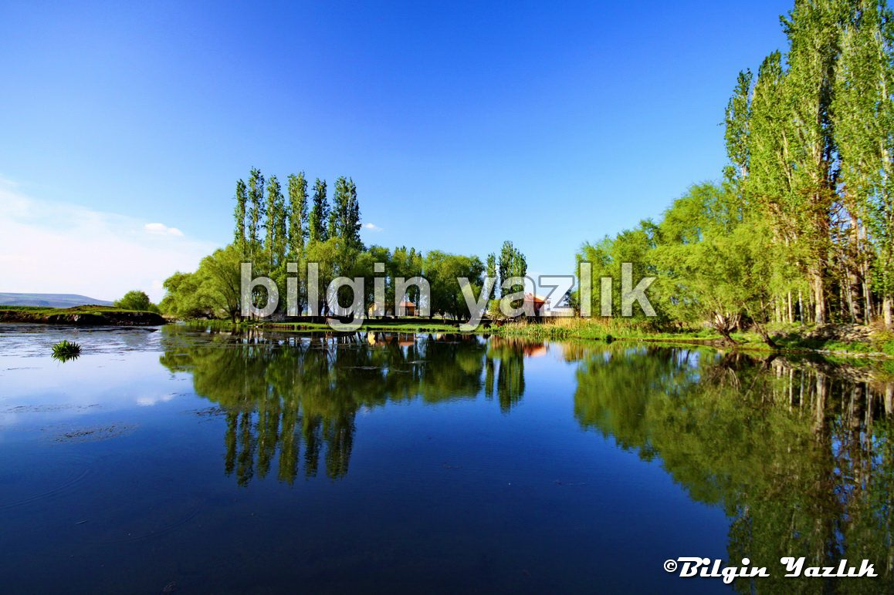
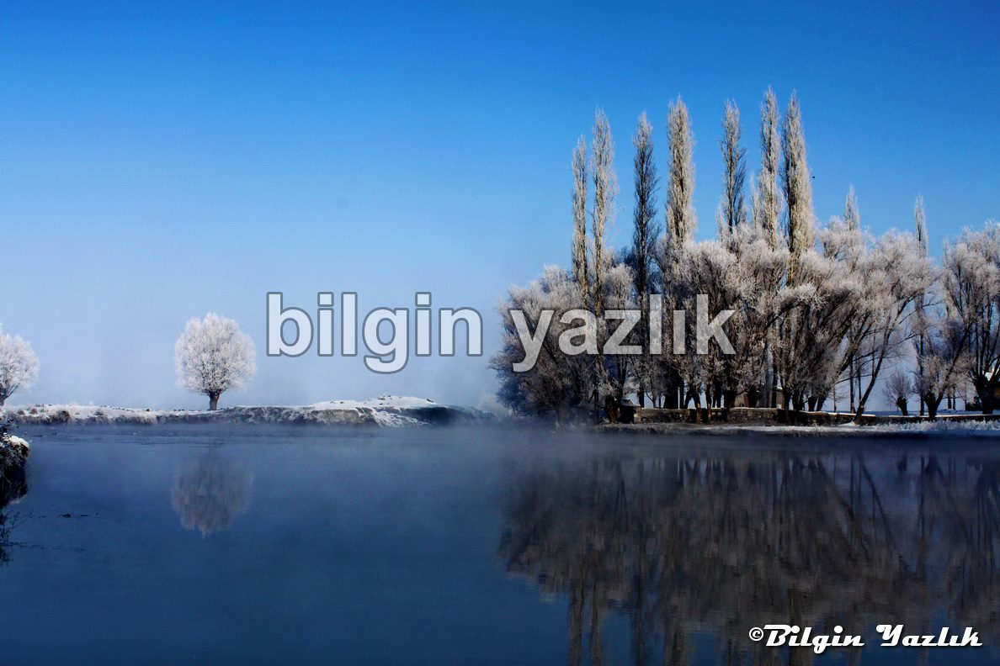
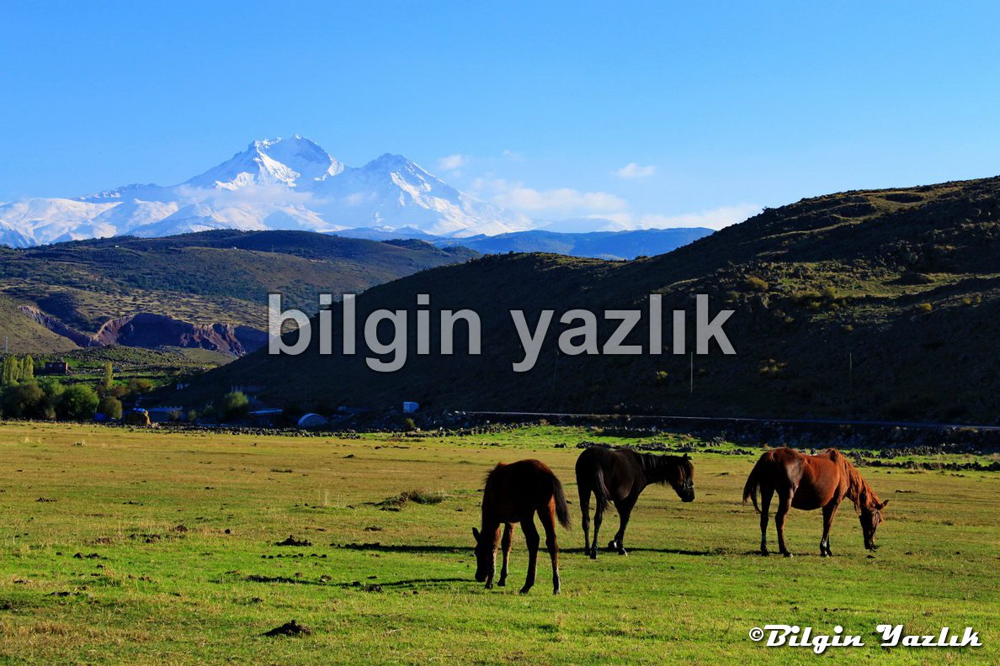
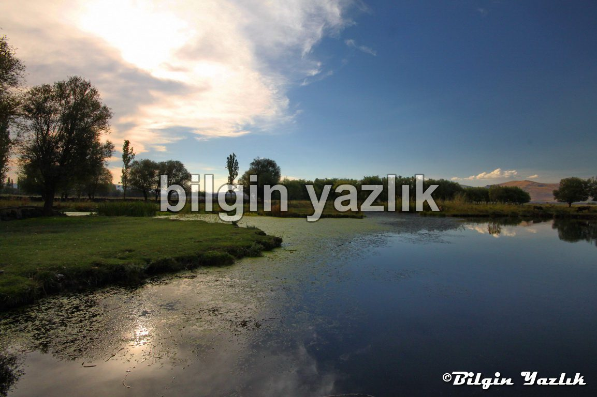

Dokuz Pınar Gölü
Kayseri ili Dokuzpınar Köyü sınırları içerisinde yer alan bu küçük göl, eşsiz manzarası ile ziyaretçilerini bekliyor.
Dokuzpınar bölgesi yer altı su kaynaklarının bol olduğu bir bölge ve bu göl de bu kaynakların bir birleşimi olarak düşünülebilir, bir – bir buçuk metre derinliğe sahip olan gölün suyu oldukça duru ve dibini görmek mümkün.
Çevresinde yer alan söğüt ağaçları ve çayırlar gölü yeşil bir okyanusta mavi bir ada gibi gösteriyor.
Dokuzpınar köyünde camız yetiştiriciliği oldukça revaçta, akşam saatlerinde gölün içinden yüzerek geçen onlarca camız görmek de mümkün, göle 200 metre mesafede dokuzpınar su kaynağı da bulunmaktadır, bu kaynaktan akan suyun bölgenin en kaliteli içme suyu olduğunu iddia edebilirim.
Akşam güneşi ile birlikte nefis fotoğraflar veren bu tatlı su gölüne uğramanızı tavsiye ediyorum.
Konum:
38°40’35.98″K
35°18’14.52″D




Bu yazı taliyol arşivinden taşınmıştır. · özgün kayıt